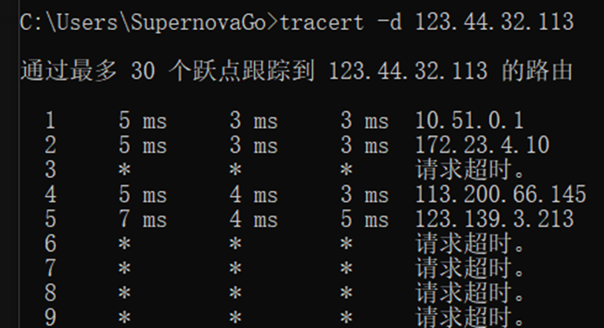
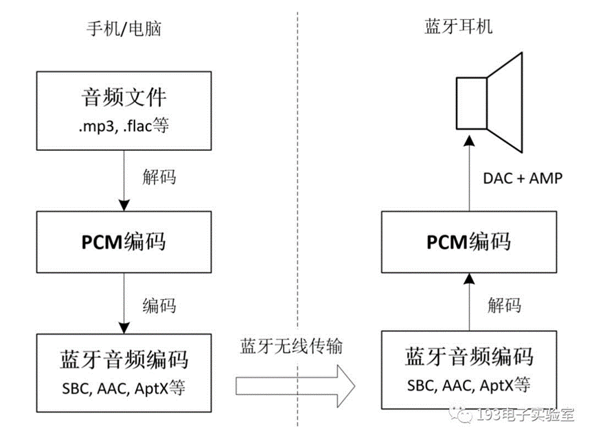

一种非真实感渲染的艺术风格，该技术通过在三维物体的基本颜色上创建平面颜色，使物体看起来有着三维透视，同时又保持着二维效果
简单来说就是先通过3D技术，然后将3D模型渲染成2D的色块效果
Long Term Support 的简写，即长期支持版本，具有最好的稳定性和支持性
解释不需要编译过程，省了一道工序
首先注意到，在编译的时候，如果出现了一个错误，则得不到任何结果，就算错误出现在最后面也不行；而解释性语言如Python，则是逐行解释的，只要还没有碰到错误的地方，前面所有的代码都是可以正常输出的
编译时先分析后综合，从而得到目标程序，编译完成后直接运行不需要再翻译，解释语言虽然省了一道工序，但每次运行时都需要逐行解释，因此效率更低
可拓展标记语言，被设计用来传输和存储数据，不用于表现和展示数据，该文件的拓展名为 .xml
而HTML与之相对，是被设计成用来展示数据的
HTTP 协议被设计成用于传输数据的
2.5e+18，该格式是科学计数法在计算机上的表示方法，表示为
DLL文件是一些封装好的类和函数，可以让别的程序调用
它没有main函数，也就没有程序开始和结束的完整流程。它和可执行文件类似，但需要依赖于其它程序才能执行
现在大型软件基本是一个.exe和一堆.dll文件组成，这就是使用的动态链接
dll优缺点：
软件版本更新时只需要更换部分文件，用户更新压力校
容易损坏和丢失
与 .dll 对应的 .lib 是静态链接库
一种非正式的、类似于英语结构的、用于描述算法的语言，而不依赖于任何具体的编程语言
使用伪代码的目的是使得被描述的算法可以很容易地被任何一种编程语言实现，因此伪代码必须结构清晰、代码简单、可读性好、介于自然语言和编程语言之间
本地回环地址：127.0.0.1，地址为本地回环地址的任何数据包都不会离开本计算机
程序关闭后，其pid和分配的端口号均会改变，而不是固定的
每次登录应用程序，服务器的 IP 地址可能是不一样的，通过任务管理器得到进程 pid，然后在cmd输入netstat -ano|findstr pid即可得到端口号和一堆 IP 地址，一般第四个就是服务器 IP
在 wireshark 中，通过筛选 ip.addr==ip ，可筛选出所有来自或通往该 IP 地址的全部数据包
加密后的数据称为密文，被加密的数据称为明文
算法可分为单向加密和双向加密
通过对数据摘要计算生成密文，这一过程不可逆
代表：MD5、SHA、MAC、CRC等
可通过密文反推出明文，也就是可逆的
对称式加密：加密和解密使用同一把密钥
代表：异或加密、AES、RC系列、DES等
特点：计算量小，速度快，适合对大量数据进行加密
非对称式加密
有公开密钥和私有密钥，公钥加密的只有私钥才能解密，私钥加密的只有公钥才能解密
代表：RSA、ECC等
特点：安全性更好，但加密时间长，速度慢，只适合加密少部分数据
流程：
乙方生成一对密钥（公钥和私钥），并将公钥向其它方公开
得到该公钥的甲方使用该密钥对机密信息加密后发送给乙方
乙方使用私钥对密文进行解密
在传输过程中，即使攻击者截获了传输的密文和公钥，也无法破解密文
基于非对称加密体制，解决的核心问题是：确保文件没有受到更改
A 对文件生成一个128位的摘要，然后使用私钥对这个摘要进行加密，加密后的密文就是数字签名
B 也对文件生成一份摘要，然后使用公钥对密文进行解密得到A的摘要，签名验证就是比较两份摘要是否相同
全名为核心校验破解，实质是绕开数字签名和版本的校验
所有安卓应用程序都要求开发人员用一个证书进行数字签名，安卓系统不会安装没有进行签名的应用程序
正常情况下，软件被破解后，数字签名就会失效，因此无法正常安装，低版本也无法安装回去
核心破解后，可以应用降级、覆盖安装和无签名安装
核心破解必须要root
全称高级矢量扩展指令集
指令集是CPU所能执行的所有基本指令的集合，直接关系到CPU性能
扩展指令集：增加的特殊指令以满足时代的进步，提高CPU在某些方面的性能
SIMD是第一个扩展指令集，单指令多数据，即在一个周期内一个指令可以完成多个数据操作
SSE流式单指令多数据扩展指令集，为SIMD增强版本，从SSE到SSE4均为Intel出品，SSE5由AMD开发
AVX借鉴了一些SSE5的思想，形成了新一代的完整SIMD指令集规范，目前大部分CPU都已支持AVX指令集
初代Intel AVX指令集的扩充和加强：
支持256位矢量运算，浮点性能最大提升两倍
增强的数据重排，更有效存取数据
支持3操作数和4操作数，在矢量和标量代码中能更好使用寄存器
支持灵活的不对齐地址访问
支持灵活的扩展性强的VEX编码方式，可减少代码
AVX（2008）、AVX2（2011）、AVX512（2013，本质就是第三代）均为AVX指令集的版本
AVX512指令集，将指令宽度进一步扩展到了512位，支持它的CPU运算速度大幅提升，理论上浮点性能翻倍，整数计算也有较大提升，因为宽指令和速度快等特性，非常适合用于深度学习等密集型计算
一种批处理的称谓，简单而言，就是一些命令组织在一起，作为一个单独命令完成一个特定任务
固件（Firmware）介于软硬件之间，是写入 EPROM 或 EEPROM 中的程序，可视为软件也可视为硬件
可理解为设备内部保存的设备“驱动程序”，通过固件，操作系统才能按照标准的设备驱动实现特定的运行动作
固件是担任着一个系统最基础最底层工作的软件，而在硬件设备中，固件就是硬件设备的灵魂，因为一些设备除了固件以外，没有其它软件组成，因此固件也就决定着硬件设备的功能和性能
诸如主板（bios）、相机、手机、U盘等都有固件
后缀名一般为 .ISO，它将一系列特定的文件按照一定的格式制作成单一的文件，方便用户的下载和使用，本质上和压缩包类似，但只能通过特定的软件（如虚拟光驱工具）进行解压
常见的有系统镜像、游戏镜像等
晶体管更小，要移动的电荷量就越少，就能更快地切换状态，耗电更少
电路更精凑，距离变短，信号延迟更低，导致时钟速度可以加快
有的网站没有 www 开头的域名，是正常的，它们仍然使用万维网的各种协议（如http）
现在越来越多网站不再添加 www 这个最底级的域名。现在加不加其实没有太大区别，建站时想加就加。但在输入网址的时候，必须分清有没有 www
位于C:\windows\System32中，是Windows运行所必不可少的软件，许多进程都需要依赖它（而不仅仅是update进程），删了它将导致无法开机
是一个开源的跨平台 JavaScript 运行时环境，或者说是一个 js 语言解释器，侧重于服务器端和网络应用。它让 JavaScript 的触角伸到了服务器端，直接对标PHP等语言
Hypertext Preprocessor：超文本预处理器，是在服务端执行的脚本语言，尤其适合于web开发并可嵌入HTML中，或者说，PHP 是一种用于web开发（服务端）的脚本语言
PHP语法学习了C语言，吸纳了Java、Perl等多个语言的特色并发展出了自己的特色语法
支持面向过程和面向对象开发
两者基本可理解为同一个东西，只是侧重点略有不同
脚本语言强调“脚本”，也就是强调某种编程语言能用于编写脚本来自动化批处理任务等。“脚本”一词通常指一系列指令（可以是编程语言或自然语言）、命令的集合，用于自动执行特定任务或操作
解释型语言强调在运行时由解释器逐行解释并执行这一特性，被编译型语言相对应
curl是一个常用的命令行工具，用来请求 web 服务器，可直接在命令行或终端中使用
curl https://www.example.com：不带任何参数，此时发送的就是get请求
在 Pycharm 的终端中若报错无法使用curl，可能需要将curl改为curl.exe
jsonlines的缩写，它和json的主要区别在于格式略有不同。jsonl是一行一个json对象，每个对象之间用换行符进行分割，便于阅读，比json更容易处理大型数据集
bat文件：自动运行批处理文件，是一个文本文件，可使用记事本打开并修改
该文件中每一行都是一条DOS命令，可视作可执行文件，由一系列命令构成，其中可包含对其他程序的调用
cmd文件：Windows命令脚本文件，同样可以用文本修改器修改
cmd 是在操作系统中，提示进行命令输入的一种工作提示符。在不同操作系统环境下，命令提示符各不相同。在Windows环境下，命令行程序为 cmd.exe，是一个32位的命令行程序
cmd可方便、快捷地输入命令并对电脑进行控制。小黑窗口，高手必备
cmd中常用的基础命令：
tracert -d ip：跟踪路由信息，使用此命令可查出数据从本地传输到目标主机中所经过的所有途径，这对了解网络布局和结构很有帮助

telnet：远程登录命令，在以 Administrator 身份连接远程机器后，就可以用它来做很多事情
ping：用于获取和目的主机之间的网络数据包的流通性等情况，比如是否可达、中间穿过了几个路由器（通过TTL值可看出）
net：该命令是网络命令中最重要的一个，功能非常强大
dir：列出该目录系啊所有文件
ipconfig：查看本机的网络适配器属性、本机ip地址等
calc：启动计算器
explorer：打开资源管理器
logoff：注销命令
osk：打开屏幕键盘
regedt32：打开注册表编辑器
services.msc：本地服务设置
shutdown系列：和关机、重启等有关
在程序开发中，需要记录每个开发出来的版本，即版本控制。修复bug时可提交一个新版本，在完成不同任务时也可分别维护专用的分支，避免混乱。如果当前版本在操作过程中意外损坏，还能够还原曾经的版本。版本控制可以极大促进团队合作和大项目的开发
git是一个著名的版本控制工具
github是基于git的代码托管网站。可以说git是用来控制版本的，而github就是存放不同版本的地方。开发者在开发新项目时，可以将代码放到github上，如果要用就使用git直接clone到本地，不仅利于开发者，也便于代码的分享
代码托管是面向软件开发者的一种在线代码托管服务，即提供安全管控、成员/权限管理、分支保护/合并、在线编辑和统计服务等功能的云端代码仓库
若pdf加上了保护，表现为能选中pdf中的文字，但不能复制。若要获得读写权限，需要键入密码
pdf 是图片型的，或者说是扫描件，此时的pdf可视为多张图片的集合，因此文字不能选中，而文件搜索关键字也无法运行
OCR：optical character recognition，光学字符识别，可识别图片中或pdf中的打印文字（非手写文字），便于后续操作
在cmd输入：
reg add “HKEY_LOCAL_MACHINE\SOFTWARE\Microsoft\WindowsUpdate\UX\Settings” /v FlightSettingsMaxPauseDays /t reg_dword /d 3000 /f
可延长 Windows 自动更新时间，其具体含义是：
red add：用于向Windows注册表中添加或修改注册表项的值
目的：HKEY开头的一串字符串
/v：创建或修改一个指定名称的值，这里是FlightSettingsMaxPauseDays，即最大暂停更新时间
/t：指定该值的数据类型，这里是 reg_dword
/d：指定一个值，这里是3000，代表3000天
/f：强制执行无需确认
此外还有其他方法，比如去https://www.sordum.org下载工具来屏蔽更新
创建
创建新仓库，在命名的时候必须带有github.io，否则不会创建网站，此外仓库名就是网站域名
在项目里新建index.html文件，并且在文件中随便写点东西，提交保存
setting里面，code and automation部分，选择pages
source 选择 deploy from a branch，branch选择想要的分支，一般是main，点击save，此时显示网站已经运行了
下载git工具，将项目拖到本地，在本地进行建站
建站完成后，利用工具将项目 pull 到github，完成
注意：
提交更改后，需等待几分钟网页才会更新
如果直接输入分配到的域名，会进入index.html网页，如果没有则访问失败
和本地一样，网页同样支持相对位置
前端开发
主要设计网站和app，即用户能够从app或浏览器上看到的东西，主要关心界面的设计和用户的交互，一般使用VUE、swift、kotlin等技术
后端开发
后端设计搭建服务器，保存和获取数据，以及用于连接前端的接口
主要关注业务的实现、数据的处理和服务器的速度和响应能力等
全栈开发
有些人可同时从事前端和后端开发，称为全栈开发者
全栈开发需要懂得多项互联网技术，有着丰富的技术积累和经验才能胜任
生成生物群系
生成地形
利用生物群系图决定每个区域的高度，画出基本轮廓
得到的是地形（全是石头）
所有低于 y=62 的区域，都将填上水成为海洋
生成地表
将表面的石头替换成符合特定生物群系的方块
品源是草方块，沙漠是沙块等
生成洞穴
生成较为复杂的结构
包含各种建筑，如村庄、海底神殿等
生成各种装饰
包含树、草、各种动物等
是世界上最大的预印本网站，由康奈尔大学维护，可在上面找到许多论文并免费下载
该网站的本意是“预印”。投稿论文到期刊发表是有时间的，为了防止自己的idea在论文被收录前被别人剽窃，可以将预稿上传到arxiv作为预收录。即arxiv可以证明论文原创性（通过上传时间戳）的文档收录网站
.NET 是一个用于开发的框架
提高 .NET 就不得不说起 .NET framework，它是一个开发平台，包含公共语言运行库（CLR）和基类库（BCL），CLR负责管理代码的执行，BCL提供了丰富的类库供开发者构建应用程序，支持多种语言的开发。但 .NET framework 和Windows深度绑定，不支持跨平台
为了解决跨平台问题，微软推出了 .NET core，并在 .NET core 5.0 之后去掉了 core 字眼，统称为 .NET
C# 是微软开发的一个现代的、通用的、面向对象的编程语言，基于C系语言，效率较高，且支持C++不支持的垃圾回收等功能
C#的开发和 .NET 深度绑定，即使用C#必须使用 .NET框架，但这个框架本身不仅能开发C#
指编程语言中可以更容易表达一个操作的语法，相当于汉语中的一大堆文字用一个成语来表示，也可以理解为简写
语法糖可以让程序员更加容易地使用编程语言，让操作可以变得更加清晰、方便或是符合程序员的编程习惯
比如 lambda 匿名函数就是一个语法糖，事实上很多语法其实都是语法糖
语法糖并不能优化程序的性能，但可以方便程序员的代码编写
二维码的内容由其中的数据决定，不同的数据会生成不同的二维码，因此不同应用生成的二维码，只要数据不冲突，其二维码就不会冲突
二维码本身是一种编码，即将数据编码成二维码，当扫描的时候，将进行解码得到原始数据
二维码的标准是统一的，由国际标准化组织 ISO 制定。最常见的二维码标准是 QR（Quick Response Code，快速响应矩阵图码），它保证了不同的设备、应用程序和生成器能理解和生成相同的二维码
二维码的容错率：二维码中的数据具有部分冗余的特点，使得其具有一定容错能力。在某些情况下，二维码的一部分被损坏，扫描设备仍然能够正确解码出其中的数据。例如30%容错率，表示二维码被损坏最大30%时仍然能够被解码
音乐播放中的编解码：手机中的音频文件如 .mp3、.flac等都是由 PCM 音频编码的基础上二次编码来的，目的是为了减少文件体积。在音频播放的时候，需要将 mp3 等格式还原成 PCM 编码
蓝牙播放过程中的编解码
使用蓝牙时，相比直接播放多了一道编解码步骤，这个步骤决定了蓝牙音乐的音质

蓝牙编码类型
SBC：Subband Coding，子带编码，是支持蓝牙的设备中必须支持的编码类型，其复杂度低，质量最差
AAC：Advanced Audio Coding，高级音频编码，其压缩比高，质量较好
Aptx：根据高音质、低延迟等特性，分化出了四个版本，质量比 AAC 更好。目前由高通握有该项技术的专利
LDAC：由索尼开发，最高能以 990 Kbps 的比特率传输高分辨率音频，质量是当前主流编码中最高的一种，是第一种通过 HiRes Audio认证的编码技术
LHDC：Low-Latency Hi-Definition Audio Codec，支持高达900Kbps的传输速率，且延迟比较低，同样通过了 Hi Res Audio 认证
Hi Res Audio认证
全称 High-Resolution Audio，即高解析度音频，最开始是音乐和音响设备商的营销术语，通常表示比 CD 音质更好的音频，由日本音响学会提出，目前仅有 LDAC 和 LHDC 两种蓝牙编码通过了 wireless 的认证
获得认证的产品可贴上以下标识，俗称小金标
开启更好音频编解码
手机打开开发者模式，在里面找到“蓝牙音频编解码器”，选择耳机最高支持的编解码方案，然后在已连接的蓝牙设备中打开该解码方案。若退出开发者选项后，又回到了原本的编解码方案，可能是系统的问题，重启手机或更新系统
clone 下来的，或者直接下载的zip，一般需要本地手动编译：cmd中cd到源码文件夹，按照项目的readme文件或网上查找编译命令，C++项目就用g++编译，java就使用java编译
预编译：有时指编译过程中的处理 #include 这一步；有时也指别人帮你编译好了，如预编译文件就是别人已经编译了而你不需要再次编译的文件，与之相对的即手动编译
Java Archive File，是 Java 的一种和平台无关的文档格式
jar 文件和 zip 文件十分相似，或者说它以 zip 文件为基础，额外包含了一些 java 相关的文件。jar文件主要打包了别人已经写好的类，它可以像 .py 文件那样被引入自己的工程中，也可做其他用途
是一个可以直接运行的web'模块，通常用于网站，也可以认为是一种压缩包，通常包含 html文件、xml文件等，可以说一个war文件就是一个web应用程序
核显直连：画面由核显渲染且由核显输出到显示器中，优点是节能省电
混合模式：画面由独显渲染但由核显输出至显示器中，性能较好且相对节能，但多了一个交付工作必然影响了性能
独显直连：完全由独显渲染且由独显输出，性能最好但功耗也最高，目前游戏本逐步采用了该项技术。而不支持独显直连的电脑也可以外接一个显示器，这个显示器就相当于是独显直连的
text to speech，语音合成技术
Vits：全称“Variational Inference with adversarial learning for end-to-end Text-to-Speech”，即“使用变分推断和对抗学习实现端到端的语音合成”，是目前语音合成最好的模型
是一个存储有关系统配置的数据库文件，位于windows/System32/config文件夹内，这些文件都没有后缀名，无法直接编辑，必须通过系统提供的特定程序，即 regedit（注册表编辑器）
注册表编辑器中，右侧每一项称为 key，最高级的键以 HKEY_ 开头，每个键可以有多个子键，键和值对应，值有名称、包含的数据以及数据类型三个属性
总的来说，注册表包含 key、subkey、value 三个东西
常见用法之一是在选中文件时，添加右键菜单的“用xx打开”或将其删掉：\HKEY_CLASSES_ROOT\*\shell、HKEY_CLASSES_ROOT\Directory\Background\shell等地方，其子项即右键菜单中的应用，可以新建或删除项以达到更改右键菜单的目的（根据右键空白区域、右键文件夹、右键文件等右键菜单处于不同位置）
分卷压缩主要目的是为了降低单个文件的大小，在某些限制文件大小的情况有效（如Fat32只支持4G最大文件，网盘上传最大文件4G等）
分卷压缩相当于将文件压缩后分割成大小相同的几个小压缩包（最后一个除外），解压时再合并成一个完整的压缩包，因此解压时每个分卷都不能少，否则将无法解压
分卷压缩后得到的是一个 .zip 文件和若干个后缀名以 z 开头的文件，可直接解压 .zip 文件
也可称为 DNS 劫持，是DNS系统遭到入侵且入侵者取得域名解析记录控制，修改了域名的解析结果，使得其由 域名-正确IP 映射关系，编程 域名-错误IP 的映射，结果不仅会导致无法访问正确的网址，还会诱导进入假网站
一般是小型的免费软件，其特点是无需安装即可使用，可存在于移动存储媒体中（因此也称便携软件），移除后也不会将任何记录如注册表消息留在本机上。绿色版和免安装版是类似的概念
HTTP下载：HTTP 中的“超文本”就是指 HTML。在网站中如果打开了一个链接，而这个链接是浏览器支持的类型（例如HTML文件），就会直接打开，如果不支持，浏览器就调用HTTP下载。如果浏览器装有下载插件，就会将下载任务交给插件进行
断点续传：HTTP1.1 在请求头和响应头分别添加了range和content-range两个字段，以实现断点续传。这两个字段是确定中断下载后再次下载开始的文件位置
多线程下载：是断点续传的变相应用，下载工具在下载时建立多个线程，每个线程下载文件的一部分，最后合并起来。这种方法可以提升下载速度，但资源提供者并不鼓励这种方式，因为抢占了传输带宽，被检测到后可能会禁IP
FTP：文件传输协议，公网上用的不多，主要是团体内部使用
BT下载：HTTP 下载是从内容提供商那下载的，下载人数越多速度就越慢。BT即Bittorrent，是一种基于P2P的传输协议，也可指第一个实现BT协议的软件。BT下载利用BitTorrent协议，优先从已下载该资源的另一台主机上下载，某份资源下载的人数越多反而会提升下载速度
种子：后缀名为 .torrent 的文件，存储有文件的文件名、哈希值、Tracker信息。哈希值是一串十六进制数字，用于判断文件的完整性和正确性。下载完成后会重新计算文件的哈希值，并与种子内的哈希值比较，两者一致即代表文件完整且正确
Tracker：是一个服务器地址，但与HTTP服务器不同，Tracker服务器不保存文件内容，只保存文件的哈希值和已下载过该文件的所有用户的IP地址。种子资源下载完成后，BT软件会自动做种，即BT软件告诉Tracker服务器本电脑也有了这个文件资源
PT：全称Privite Tracker BT，一般以论坛的形式存在，是私有化的BT，仅对内部人员开放。PT一般会计算下载量和上传量，因此氛围较好，出现死种的情况低的多
BT2.0：BT 的文件虽然是分布式存储的，但 Tracker 是中心化的，因此端掉了 Tracker 就能让这一部分的BT传输完全瘫痪。Kademlia协议使用DHT（分布式哈希表网络），其原理是将 Tracker 服务器保存的信息分散存储在DHT网络的各个节点中，并且留有冗余
ed2k：全称 eDonkey2000，中文名电驴，是使用BT技术的软件，同时也是其协议 ed2k:// 的名称，但在2005年被迫关闭。它不需要种子文件，所有重要信息（文件名、哈希值、Tracker地址等）都保存在ed2k链接中，因此这个链接会非常长
磁力链：是协议名为 magnet: 的下载链接，其原理和用法与 ed2k:// 几乎是一样的。磁力链可以与BT种子搭配使用，即为多个文件制作好 BT 种子之后（种子也是一个文件），再为种子文件制作一个磁力链接。ed2k 和磁力链的优势是不需要文件，只需要链接即可传输文件，而种子的优势是可以关联多个文件
一个典型的磁力链为：magnet:?xt=urn:btih:哈希值&dn=文件名&tr=Tracker服务器地址
专用下载链接：除了 magnet 之外，还有 thunder（迅雷）、qqdl（QQ旋风）等专用链接，只能使用专用软件下载文件
离线下载：指别人从内容提供商下载完资源后，再从别人那传输到本地，一般是网盘的增值服务。若有人已经下载了该资源，则离线下载速度几乎就是瞬间完成，这个时候就相当于将资源存储到了网盘里，等方便的时候再传输到本地
以 .开头的文件夹是隐藏文件夹，在Windows系统中不会被自动隐藏，但在某些软件里进行路径跳转则不会看到此文件夹，包含cmd中的cd命令，以及Pycharm无法打开 .venv 中的文件
活动（Activity）：可理解为手机商 app 各个界面的名称，相当于Windows中的窗口
降级法安装安卓旧版本软件：以保留数据的形式删掉原软件，之后重启，并下载旧版本后直接安装，即可跳过登录直接进入
用户可在电脑上安装 Android SDK 后，通过输入命令的方式实现对手机高权限的控制。权限范围因手机品牌而异
配置：PC端安装 android sdk，添加环境变量，打开 cmd 输入 adb version 后显示版本详情即配置好；android端打开开发者选项，打开usb调试和其它需要打开的开关（不同手机设置不一定相同）
Adb 有两种格式的命令：
adb+命令，一般只能在电脑上运行
adb shell +命令，通过调用手机里的shell.apk运行，可在手机上执行，但需要root权限。该命令也可先输入 adb shell进入shell，再直接输入命令。可输入exit退出shell
常见命令：
adb devices：授权，或者显示已连接的设备
adb install + 软件名：安装软件
注意若adb目录和apk目录不一致，需要将apk拖动到cmd中得到路径
-d：该参数允许降级安装，这里的降级不是直接安装低版本的软件，而是先保留数据卸载，再使用-r命令安装低版本软件，跳过登录实现降级
-r：覆盖安装，替换已经存在的应用程序
adb uninstall+参数+包名：强制卸载软件，注意这里是包名
-k：该参数为保留数据卸载
adb shell ps | findstr com.tencent.mobileqq：指定包名查看其 pid，这里以QQ为例，其输出第二列就是pid
包管理器（pm）命令：可实现对系统和第三方软件的高权限控制，如禁用（即冻结）、卸载、清除数据、授予权限等
adb shell pm list packages：查看所有安装程序的包名
adb shell pm disable-user+包名：强制禁用软件且失去所有权限，无法被启动
adb shell pm enbale+包名：启用软件
adb shell pm uninstall --user 0 +包名：删除app，注意0前面有个空格
一台设备可以有多个ip地址，也可以有多个mac地址
一些软件会创建一些新的适配器，如UU加速器等，这样就会出现多个物理地址，当卸载该软件时可直接将该适配器删掉
MAC地址也称局域网地址，它是由本机上报的，故本机可每次采用随机MAC地址（可保护隐私），上报给路由器，路由器根据发来的MAC地址进行转发数据包。所以MAC地址尽管是每个设备唯一的，但不能作为定位码；IP地址是上级下发的，如果不采用会上不了网，因此一般使用IP地址进行定位
一般有线网卡和无线网卡各一个mac地址，此外还有一些软件也会创建以太网或无线适配器，一台电脑往往有多个MAC地址
可在CMD中输入ipconfig /all查看适配器属性
参众两院共同组成美国国会，行使立法权，同时具有法案的发起（众议院）、否决（参议院）的权利
参议院（Sanate）：和英国“上议院”类似，对应罗马的“元老院”，以“各州平等”为理念，共100个席位，每州席位个数相同，均为两席。参议员任期六年，每两年改选约三分之一，拿下参议院多数席位（51席）的党派成为参议院多数党并获得参议院控制权。参议院议长一般为副总统，但无投票权，仅在投票打平时进行表决
参议院（House）：和英国“下议院”类似，对应罗马的“国民大会”，以“少数服从多数”为理念，共435个席位，按每州人口分配席位，但至少有一名议员。众议员任期两年，每两年进行改选。拿下超过一半席位（218席）的党派成为众议院多数党并获得众议院控制权。众议院议长由议员选举产生，传统上为多数党领导人，而多数党领袖则由党内第二重要的领导人担任
文件资源管理器的地址栏直接输入cmd并回车，可在此目录直接打开cmd
隐藏媒体文件：在包含媒体文件的文件夹中新建名为.nomedia的文件夹，然后将文件夹随便改一个名字，然后再改回去，以便第三方软件重新扫描
该方法对本体软件无效（如隐藏ehviewer的文件夹，ehviewer自己还能扫描到）
QQ摇骰子：断网，多次摇骰子，直到出现自己想要的数字。此时直接退出QQ（关掉后台），然后再重新进入，并打开网络，骰子前面会出现红色感叹号，点击要发送的骰子的感叹号即可
微信文件位置：/storage/emulated/0/Android/data/com.tencent.mm/MicroMsg/Download
QQ 闪照路径：/Android/data/com.Tencent.mobileQQ/Tencent/mobileQQ/chatimg
chrome的实验室：chrome://flags/，在网址栏输入即可打开，然后搜索 Dark 即可找到打开深色模式的选项
Edge的实验室：Edge://flags
全屏/窗口模式切换：alt+enter
窗口移动到了屏幕外边，先在进程中选中这个窗口，然后alt+空格（把powertoy先关掉），此时会出现窗口有关的小窗口，且鼠标可以移动该窗口
让powertoy一直开着也不是好事，它会占用调一些快捷键，让某些操作无法进行，比如窗口的强制移动
常用网站
http://www.ydowns.net/down/：下载youtube视频
https://www.birme.net：批量裁切图片
https://www.desmos.com/calculator?lang=zh-CN：数学画图
若连接公共网络后不弹出认证窗口，可打开浏览器，然后在网络连接的wifi属性中找到本地IPv4/6地址，或者DNS服务器地址，复制到浏览器并打开即是登录窗口
！！必须关闭VPN。弹出登录窗口本质是类似劫持的手段
使用篡改猴、以及直链助手等脚本，获取夸克网盘直链，从而将其弄到第三方下载器快速下载，如Motrix。注意必须登录网页版的夸克网盘
Windows端，可单独调整每个进程的音量：任务栏右键音量，打开音量合成器
PPT的录制功能：该功能可以实现给PPT配音等操作，在放映PPT时，根据录制自动放映PPT
C盘清理：
C盘 Appdata-local-temp 文件夹，该文件夹存放临时文件
删除 C 盘下 Local、Roaming 文件下已删除的程序所创建的文件夹
删除Windows更新文件C:\windows\SoftwareDistribution\Download